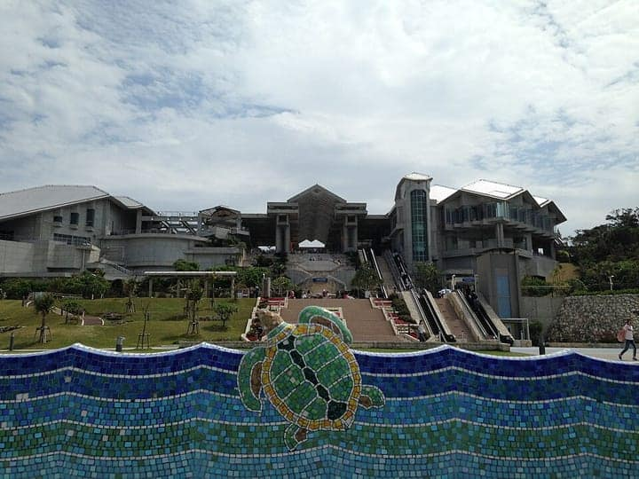
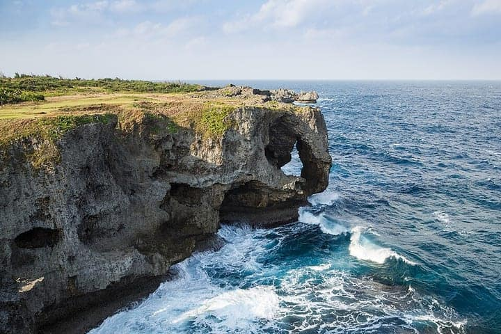
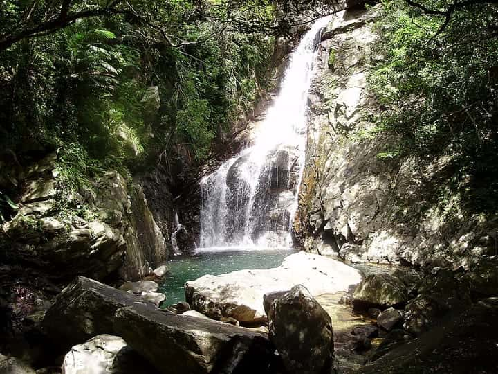
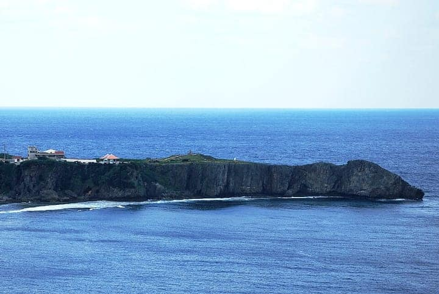

1 Must see within Hokubu · Okinawan & Ryūkyū
Soba shop founded in 1905 near the Motobu market: flat noodles still made with tree-ash lye water, in a light bonito-and-soy broth with thick boneless rib, kamaboko and island onion.
near Motobu Municipal Market, Motobu, Okinawa, Japan
Recommended by Stars and Stripes Okinawa , Ramen Adventures (Brian MacDuckston) , Okinawa Times
2 Must see within Hokubu · Okinawan & Ryūkyū
The taco-rice institution in downtown Kin: seasoned taco meat, cheese, lettuce and tomato over rice — the dish created in Kin in 1984 by Matsuzo Gibo of Parlor Senri.
Kin, Kunigami District, Okinawa, Japan
Recommended by Stars and Stripes Okinawa , Explore Parts Unknown (CNN / Anthony Bourdain) , Japan Travel (japantravel.com)
3 Must see within Hokubu · Okinawan & Ryūkyū
Founded in 1966 and billed as the birthplace of soki soba: the founder, then a butcher, simmered unsold spare ribs for hours and laid them on soba. House-made wavy noodles, punchy pork-bone broth.
Gabusoka, Nago, Okinawa, Japan
Recommended by Stars and Stripes Okinawa , Mapple (まっぷる, Shobunsha guidebooks) , Okinawa Times
4 Must see within Hokubu · Okinawan & Ryūkyū
The queue-before-opening star of the Motobu 'soba road' (Route 84): a mellow bonito-and-pork broth unchanged for four decades, soki or three-layer pork on top; closes when the noodles run out.
70-1 Izumi, Motobu, Kunigami District, Okinawa, Japan
Recommended by Stars and Stripes Okinawa , Mapple (まっぷる, Shobunsha guidebooks) , Okinawa Times
5 Must see within Hokubu · Okinawan & Ryūkyū
A century-old Okinawan farmhouse compound in the hills above Nago serving soki soba and agu pork; one of Okinawa Traveler's locals-recommend five and on Stars and Stripes' soba trail.
Nago, Okinawa, Japan
Recommended by Stars and Stripes Okinawa , Okinawatraveler , Okinawa Prefecture — 「琉球料理が味わえる店」 certification
6 Must see within Hokubu
Motobu's half-century-old zenzai shop that does exactly one thing: sweet stewed red kidney beans buried under a peak of shaved ice, bought with a ticket from the door.
11-2 Toguchi, Motobu, Okinawa, Japan
Recommended by Okinawatraveler , Gigazine , Rurubu (るるぶ&more, JTB Publishing)
7 Must see within Hokubu
Okinawa's own beer since 1957: the Nago plant's tour ends with a tasting of just-brewed Orion Draft; shop, restaurant and a small history gallery.
Nago, Okinawa, Japan
Recommended by Japan-guide , Stars and Stripes Okinawa , Okinawatraveler
8 Must see within Hokubu
West-coast roadside market that every drive north stops at: island produce, snack stalls frying sata andagi (brown sugar, beni-imo and more), and Ryu-pin's mountainous tropical-fruit kakigōri.
Nakadomari, Onna, Okinawa, Japan
Recommended by Rurubu (るるぶ&more, JTB Publishing) , Okinawatraveler , Mapple (まっぷる, Shobunsha guidebooks)
9 Must see within Hokubu · Okinawan & Ryūkyū
Opened in 1990 by Kinjō Shōko to pass on the food culture of Ōgimi, the 'longevity village'; a farm restaurant whose reservation-only chōju-zen longevity set is built on seasonal island vegetables she grows herself. Her book of Yanbaru grandmothers' kitchen wisdom was published in 2023 (Ryukyu Shimpo).
61 Ōganeku, Ōgimi-son, Kunigami-gun, Okinawa, Japan
Recommended by Rurubu (るるぶ&more, JTB Publishing) , Ryukyu Shimpo (琉球新報) , Okinawa Prefecture — 「琉球料理が味わえる店」 certification

Photo: そらみみ · CC BY-SA 4.0 · Wikimedia Commons (resized)
10 Must see within Hokubu
Widely rated Japan's best aquarium, at the tip of the Motobu Peninsula. Its Kuroshio Tank — one of the largest in the world — holds whale sharks and manta rays.
Look for Whale-shark aquarium
Ocean Expo Park, Motobu, Okinawa, Japan
Recommended by Japan-guide , Visit Okinawa

Photo: CEphoto, Uwe Aranas · CC BY-SA 3.0 · Wikimedia Commons (resized)
11 Must see within Hokubu
Grassy clifftop above the Onna coast with the elephant-trunk rock arch; one of the island's most-visited viewpoints.
Look for Clifftop viewpoint
Onna, Kunigami District, Okinawa, Japan
Recommended by Stars and Stripes Okinawa , Visit Okinawa

Photo: Philipmj24 · Public domain · Wikimedia Commons (resized)
12 Must see within Hokubu
The main island's tallest waterfall (25.7 m), reached by a forest trail and suspension bridge through the Yanbaru subtropical woods from the Kunigami campground.
Look for Yanbaru waterfall hike
Kunigami Forest Park, Hiji, Kunigami, Okinawa, Japan
Recommended by Stars and Stripes Okinawa , Visit Okinawa

Photo: Captain76 · Public domain · Wikimedia Commons (resized)
13 Must see within Hokubu
The northernmost point of Okinawa Island: jagged limestone cliffs where the East China Sea meets the Pacific, with Yoron Island on the horizon and the Yanbaru-kuina observatory on the hill behind.
Look for Northern cape
Hedo, Kunigami, Okinawa, Japan
Recommended by Stars and Stripes Okinawa , Visit Okinawa
14 Must see within Hokubu
Limestone cape on the Onna coast and the island's most popular snorkel and dive entry; swim or boat into the Blue Cave, where light through the sea floor turns the grotto luminous aquamarine.
Look for Snorkel cave
Maeda, Onna, Okinawa, Japan
Recommended by Stars and Stripes Okinawa , Visit Okinawa
15 Must see within Hokubu
The 1,960 m toll-free bridge (2005) from Yagaji Island across emerald shallows to Kouri, the 'Island of Love' — one of Okinawa's signature drives, with beaches, Heart Rock and garlic-shrimp trucks at the far end.
Look for Sea bridge & island
Kouri, Nakijin, Okinawa, Japan
Recommended by Stars and Stripes Okinawa , Ocvb
16 Must see within Hokubu · Okinawan & Ryūkyū
Nago soba house founded in 1925 and run by the third generation: thick, springy flat noodles in an agu-pork-bone and bonito broth; profiled by the Okinawa Times as a century-old favourite.
1-9-2 Daito, Nago, Okinawa, Japan
Recommended by Mapple (まっぷる, Shobunsha guidebooks) , Okinawa Times
17 Must see within Hokubu · Kissaten & coffee
Red-tiled old-house café on a hilltop above Motobu serving the same home-made pizza for a quarter-century; on clear days Ie-jima, Sesoko and Minna float on the horizon.
1153-2 Yamazato, Motobu, Okinawa, Japan
Recommended by Rurubu (るるぶ&more, JTB Publishing) , Okinawatraveler
18 Must see within Hokubu · Soba & udon
Yanbaru noodle shop founded in 1972, on the way to Hiji Falls and Mt Yonaha; its signature gyūniku soba piles pepper-fried beef and bean sprouts on thin noodles, and weekend queues are the norm. Closes when the broth runs out.
Tsuha, Ōgimi, Kunigami, Okinawa, Japan
Recommended by Stars and Stripes Okinawa , Okinawatraveler
19 Must see within Hokubu · Okinawan & Ryūkyū
Reservation-essential grill house for Yanbaru island pork descended from agu: cuts and offal grilled over individual charcoal shichirin, with rare pork tongue and a horumon fried rice to finish. Dinner only (closed Sun–Mon).
251 Isagawa, Nago, Okinawa, Japan
Recommended by Rurubu (るるぶ&more, JTB Publishing) , Mapple (まっぷる, Shobunsha guidebooks)
20 Must see within Hokubu
Opened in 1967 under US administration and kept in its original style, neon signs and all; the signature creamy pork-bone soup is a take-out ritual for west-coast beach days, and a 24-hour take-out counter sells burgers, shaved ice and sides.
Nakadomari, Onna-son, Kunigami-gun, Okinawa, Japan (Route 58, seaside)
Recommended by Rurubu (るるぶ&more, JTB Publishing) , Stars and Stripes Okinawa
21 Must see within Hokubu · Soba & udon
One of the anchors of the 'Motobu Soba Kaidō' noodle road: noodles are hand-made the old way with wood-ash lye, giving firm, flat thick noodles with a distinctive flavour (Mapple); Stars and Stripes Okinawa features it in its guide to slurping noodles like a local.
Motobu-chō (Motobu Soba Kaidō, Prefectural Route 84), Kunigami-gun, Okinawa, Japan
Recommended by Mapple (まっぷる, Shobunsha guidebooks) , Stars and Stripes Okinawa
22 Must see within Hokubu
Hilltop stronghold of the Hokuzan kingdom with long serpentine limestone walls. UNESCO Gusuku component.
Look for Gusuku ruins
Nakijin, Kunigami District, Okinawa, Japan
Recommended by UNESCO
23 Worth the detour within Hokubu
A roadside station on Route 329, the first on Okinawa's east coast. It is known for its water-play plaza and giant slide, and an All About 2025 survey ranked it second among Okinawa roadside stations to visit with children. One of the three official Okitsura manhole covers, showing the heroines and Ginoza's mascot Gī-no-kun, was installed here as part of the Kin Bay council's pilgrimage campaign.
Look for ★ Anime & pop culture — Okitsura (沖縄で好きになった子が方言すぎてツラすぎる, anime 2025) — official Okitsura manhole (with Ginoza mascot Gī-no-kun) · Okitsura manhole at a family roadside station
1633 Kanna, Ginoza Village, Kunigami District, Okinawa 904-1304, Japan
Recommended by Ryukyu Shimpo (琉球新報) , Kintown , Rurubu (るるぶ&more, JTB Publishing) +2 , All About (allabout.co.jp) , Ginoza Village official site (宜野座村)
24 Worth the detour within Hokubu
A burger shop that began as an Osaka bar in 1999 and opened in Nago in 2007, moving to its current Umusa site in 2020. Stars and Stripes Okinawa calls it a hot spot for its taco rice as well as its burgers; OTV Okitive profiles its Mexican-loaded 'Captain Kangaroo taco rice', and Smart Magazine ranks it among Okinawa's top one or two burger shops.
183 Umusa, Nago-shi, Okinawa 905-0006, Japan
Recommended by Stars and Stripes Okinawa , Okinawa Television (otv) — Okitive , Smartmagazine +2 , Ocvb , Tabirai
25 Worth the detour within Hokubu
An 800 m long-beach seaside park in Kin, listed by the OCVB film office as a location. It is one of the three official pilgrimage stops for the manga and anime 'Okitsura': one of the series' manhole covers was installed here, and the Kin Bay council ran its Okitsura collaboration campaign from the park's management building. The campaign art shows the heroines eating taco rice, the dish that started in Kin, against this beach.
Look for ★ Anime & pop culture — Okitsura (沖縄で好きになった子が方言すぎてツラすぎる, anime 2025) — official Okitsura manhole + Kan-Kin-Bay council collab campaign site · Okitsura manhole & collab beach
10819-4 Kin, Kin Town, Kunigami District, Okinawa 904-1201, Japan
Recommended by Ryukyu Shimpo (琉球新報) , Kintown , Ocvb +1 , Kin Sunrise Beach official site
26 Worth the detour within Hokubu
A 60-hectare nature theme park on a former golf course straddling Nakijin and Nago at the edge of Yanbaru, opened 25 July 2025 by Katana Inc. (led by ex-USJ marketer Tsuyoshi Morioka): animatronic-dinosaur rides, buggy safaris, bungee and an aerial course, plus a spa annex and 15 restaurants (Stars and Stripes; The Japan Times; nippon.com/Jiji).
Look for Northern Okinawa's new jungle theme park (opened July 2025)
553-1 Gogayama, Nakijin-son, Kunigami-gun, Okinawa 905-0413, Japan
Recommended by Stars and Stripes Okinawa , The Japan Times , nippon.com (Nippon Communications Foundation) +1 , Tabirai
27 Worth the detour within Hokubu · Sushi & kaisen-don
A fish-sales hall with an attached diner inside Nago fishing port on Route 58, cooking fish auctioned that day at the port. Ryukyu Shimpo's 'Uchinā aji māi' column praised its seafood bowl of many fish, Okinawa Times' driver-lunch column went for the squid-ink soup and tempura, and the Nago tourism association lists it.
3-5-16 Gusuku, Nago-shi, Okinawa, Japan
Recommended by Ryukyu Shimpo (琉球新報) , Okinawa Times , Tabirai +1 , Nagokanko
28 Worth the detour within Hokubu
Billed by the OCVB as Okinawa's first shīkwāsā theme park, in the citrus's home village of Ōgimi: a free-entry factory where you watch the pressing line, compare juices from each month's harvest and eat in a restaurant cooking with shīkwāsā powder. Ryukyu Shimpo covered its completion as a local-produce revitalisation project; the Yanbaru three-villages tourism portal lists it.
1424-1 Tsuha, Ōgimi-son, Kunigami-gun, Okinawa 905-1318, Japan
Recommended by Ocvb , Ryukyu Shimpo (琉球新報) , YAMBARU3KANKO +1 , Mapple (まっぷる, Shobunsha guidebooks)
29 Worth the detour within Hokubu
A takeout taco stand opened in July 2025 on the national road to Junglia by a couple who cooked in French hotel restaurants; the meat takes three days to develop its flavour. Covered by Okinawa Times and Ryukyu Shimpo, and ranked No. 2 in the north in OTV Okitive's 2026 Golden Week 30, which says its 200 tacos a day sell out.
35 Yabe, Nago, Okinawa, Japan
Recommended by Okinawa Times , Ryukyu Shimpo (琉球新報) , Ocvb +1 , Okinawa Television (otv) — Okitive
30 Worth the detour within Hokubu · Kissaten & coffee
An Asian-style hillside café opened in May 2015 up a single-lane lane in Motobu, near Churaumi, with hammocks, arbours and mostly outdoor seats looking over forest and sea. Stars and Stripes Okinawa reviewed it for its food and coastal view; the OCVB, Mapple and Tabirai list its brunch toasts and Yanbaru-herb chicken gapao rice.
60 Nohara, Motobu-cho, Kunigami-gun, Okinawa, Japan
Recommended by Stars and Stripes Okinawa , Ocvb , Mapple (まっぷる, Shobunsha guidebooks) +1 , Tabirai
31 Worth the detour within Hokubu · Kissaten & coffee
A forest-hill café over the Haneji inland sea opened on 17 September 2024 by a YouTuber couple, built from glass-walled containers with a driftwood 'bird's nest' lookout and a giant swing (OTV Okitive, Tabirai). Its menu draws on the owners' world travels — açai bowls made without frozen fruit, poke bowls, smoothies and morning plates; rurubu ranks it among Okinawa's six best Yanbaru forest cafés.
661 Wakugawa, Nakijin-son, Kunigami-gun, Okinawa 905-0412, Japan
Recommended by Okinawa Television (otv) — Okitive , Tabirai , Rurubu (るるぶ&more, JTB Publishing) +1 , OKINAWA41
32 Worth the detour within Hokubu
Nago's municipal wildlife and botanical park (opened December 1992): about 100 species in free-roaming Africa, Amazon and Oceania zones, circled by a small light railway.
Look for Walk-through flamingo & bird park
4607-41 Nago, Nago, Okinawa, Japan
Recommended by Rurubu (るるぶ&more, JTB Publishing) , Wikipedia JA , Mapple (まっぷる, Shobunsha guidebooks)
33 Worth the detour within Hokubu
A ~100 m sheer cliff and lookout near the island's northern tip, inside Yanbaru National Park; the name ('banta' = cliff) comes from the tale that a bundle of thatch thrown over the edge was torn apart by the wind.
Look for Yanbaru's 100 m cliff lookout
Ginama, Kunigami-son, Kunigami-gun, Okinawa, Japan
Recommended by Wikipedia JA , Jta Tagengo , Ocvb
34 Worth the detour within Hokubu
Opened in 1970 at the tip of Busena Cape, the observatory stands 170 m offshore at the end of a footbridge; a spiral stair descends to round windows 5 m below the surface for watching reef fish. Glass-bottom boats run from the same park.
Look for Walk down to the reef 5 m underwater
1744-1 Kise, Nago-shi, Okinawa, Japan
Recommended by Wikipedia JA , Rurubu (るるぶ&more, JTB Publishing) , Okinawatraveler
35 Worth the detour within Hokubu
A hands-on culture village of old Okinawan farmhouses moved here from around the islands, recreating pre-war village life; visitors try indigo dyeing, pottery, weaving and bingata stencil-dyeing and watch Ryukyuan performing-arts shows.
Look for Old Okinawa's relocated farmhouses
1130 Yamada, Onna-son, Kunigami-gun, Okinawa 904-0416, Japan
Recommended by Onna Village — ココイコ！恩納村 , KNT
36 Worth the detour within Hokubu
A Pokémon manhole cover (Poké Lid) set beside Nago's Hinpun Gajumaru, the 240-plus-year-old national-monument banyan on Nago's main street. It shows Emolga and Pikipek playing in the tree. Nago installed it in Gajumaru Ryokuchi Park on 15 February 2022, and it is on the OCVB Poké Lid trail.
Look for ★ Anime & pop culture — Pokémon (Poké Lids) — Emolga & Pikipek playing in the Hinpun Gajumaru, Nago's symbol; northern stop on the Okinawa Poké Lid trail · Pokémon manhole under Nago's great banyan
Gajumaru Ryokuchi Park, 2-321-3 Gusuku, Nago, Okinawa, Japan
Recommended by Okinawa Times , Ryukyu Shimpo (琉球新報) , Ocvb
37 Worth the detour within Hokubu
The place to actually see the Okinawa rail (Yanbaru kuina), the flightless national natural monument found only in Yanbaru: a live exhibit and learning facility in Ada village, part of the Ada Kuina Fureai Park. The OCVB features it in its ethical-travel series on learning about Yanbaru nature; Mapple lists it (9:00–17:00, last entry 16:30).
Look for Meet the flightless Okinawa rail
1477-35 Ada, Kunigami-son, Kunigami-gun, Okinawa, Japan
Recommended by Ocvb , Mapple (まっぷる, Shobunsha guidebooks)
38 Worth the detour within Hokubu · Kissaten & coffee
An off-grid concrete book café on the forest road toward Yonaha-dake inside Yanbaru National Park, named for the Yanbaru kuina (Okinawa rail), running on solar power and spring water with walls of books. Ryukyu Shimpo covered its opening as a forest reading retreat; OTV Okitive calls it worth the trip, and Tabirai recommends the New York cheesecake and house-roasted coffee.
2040-107 Ōho-shagahara, Okuma, Kunigami-son, Kunigami-gun, Okinawa, Japan
Recommended by Ryukyu Shimpo (琉球新報) , Okinawa Television (otv) — Okitive , Tabirai
39 Worth the detour within Hokubu · Okinawan & Ryūkyū
Roadside soba house near Manza Beach: preservative-free house noodles, a light but bonito-rich broth and pork belly that falls apart at a touch; the aasa soba works sea lettuce into both noodles and topping.
1669-1 Serakaki, Onna, Okinawa 904-0404, Japan
Recommended by Okinawa Times , Okinawatraveler , Rurubu (るるぶ&more, JTB Publishing)
40 Worth the detour within Hokubu
Founded as a rum distiller in 1961 and brewing Okinawa's pioneering craft beer since 1996; the free tour shows 2,600 barrels of aging awamori stacked to the roof.
405 Kyoda, Nago, Okinawa, Japan
Recommended by Mapple (まっぷる, Shobunsha guidebooks) , Beer Tengoku (ビール天国) , Okinawatraveler
41 Worth the detour within Hokubu
The roadside station at the end of the Okinawa Expressway, gateway to Yanbaru: produce from the twelve northern towns and a takeout row famous for hot Okinawan tempura and tacos. Renewed in 2021.
17-1 Kyoda, Nago, Okinawa, Japan
Recommended by Rurubu (るるぶ&more, JTB Publishing) , Mapple (まっぷる, Shobunsha guidebooks) , Okinawatraveler
42 Worth the detour within Hokubu · Kissaten & coffee
A Motobu forest café picked by Rurubu, Mapple and Okinawa Traveler's 'sea or forest?' round-up of northern cafés.
Izumi, Motobu, Okinawa, Japan
Recommended by Rurubu (るるぶ&more, JTB Publishing) , Mapple (まっぷる, Shobunsha guidebooks) , Okinawatraveler
43 Worth the detour within Hokubu
The red-gated seaside flagship of the confectioner behind the 'original' beni-imo tart, made from 100% Okinawan purple sweet potato from contracted farmers with no preservatives or colouring; the baking line is visible through glass and a reservation-only tart-making class runs here.
Onna-son, Kunigami-gun, Okinawa, Japan (coastal Route 58; red-gated palace-style shop)
Recommended by Rurubu (るるぶ&more, JTB Publishing) , Good Luck Trip (gltjp.com) , Travel Watch (Impress) — local sweets series
44 Worth the detour within Hokubu
The island's rum distillery, set up in a former bioethanol demonstration plant, makes Ie Rum Santa Maria as agricole rum from local sugarcane juice. It won Best Japanese Rum of the Year at the first Tokyo Whiskey & Spirits Competition in 2019. A distillery-limited bottling took a top gold medal in the 2026 edition. The island is a 30-minute ferry ride from Motobu Port.
1627-3 Higashi-Ebusaki, Ie-son, Kunigami District, Okinawa, Japan
Recommended by Okinawa Times , Ryukyu Shimpo (琉球新報) , Good Luck Trip (gltjp.com)
45 Worth the detour within Hokubu · Soba & udon
An Okinawa soba shop in an old Ryūkyū house in a fukugi-lined village near Churaumi, known for its light but rich broth and melting nankotsu sōki. When it faced closure, fans of the shop took it over; it reopened renewed in its 10th year with outdoor seating (Okinawa Times), and ran a limited Naha pop-up in 2026.
181 Moroshi, Nakijin-son, Kunigami-gun, Okinawa, Japan
Recommended by Ocvb , Okinawa Television (otv) — Okitive , Okinawa Times
46 Worth the detour within Hokubu · Kissaten & coffee
A café-restaurant on high ground near Heart Rock on Kouri Island's north side, with a 180-degree panorama of the horizon from its terrace. It cooks with prefectural ingredients and especially Kouri Island's own pure brown sugar, used in its signature black-sugar French toast.
2516 Kouri, Nakijin-son, Kunigami-gun, Okinawa, Japan
Recommended by Okinawaclip , Good Luck Trip (gltjp.com) , Nakijinkanko
47 Worth the detour within Hokubu
A small crescent-shaped coral island (0.47 km², highest point 26.9 m) off the Motobu Peninsula, nicknamed 'Croissant Island' because it looks like one from the air. The OCVB lists it and its Minna Beach as a day-trip swimming and snorkelling spot.
Look for The croissant-shaped coral island off Motobu
Minna-jima, Motobu-cho, Kunigami-gun, Okinawa, Japan
Recommended by Wiki , Ocvb
48 Worth the detour within Hokubu
A Kōyasan Shingon temple (mountain name Kinpusan, main image Shō-Kannon) traditionally founded in the 16th century by the monk Nisshū, who was shipwrecked at Kin while sailing from Kii and preached from the limestone cave beside the temple. Kin town's tourism site lists the cave (Nisshū-dō) and the temple's old fukugi trees.
Look for 16th-century temple over the Kin limestone cave
222 Kin, Kin-chō, Kunigami-gun, Okinawa, Japan
Recommended by Wiki , Kintown
49 Worth the detour within Hokubu
The north-shore cove of 'Love Island' Kouri, reached by the long Kouri Ōhashi bridge, where the heart-shaped rock formation stands in the shallows.
Look for Heart Rock beach
Kouri, Nakijin, Okinawa, Japan
Recommended by Stars and Stripes Okinawa , Visit Okinawa
50 Worth the detour within Hokubu
Trails through jagged limestone karst near Cape Hedo, a place of prayer for some 600 years — renamed ASMUI Spiritual Hikes.
Look for Karst trails
Ginama, Kunigami, Okinawa, Japan
Recommended by Stars and Stripes Okinawa , Visit Okinawa
51 Worth the detour within Hokubu
Kilometre of sandy lanes in Bise village tunnelled by centuries-old fukugi windbreak trees, five minutes from Churaumi; walk or cycle to Cape Bise.
Look for Fukugi-tree village lanes
Bise, Motobu, Okinawa, Japan
Recommended by Visit Okinawa , Atlas Obscura
52 Worth the detour within Hokubu
Hillside park on the old Nago gusuku site — the only place in Okinawa on Japan's list of 100 best cherry-blossom spots (deep-pink kanhi-zakura in late January) — with the Tenjo lookout over Nago Bay.
Look for January cherry-blossom park
Nago, Okinawa, Japan
Recommended by Japan-guide , Stars and Stripes Okinawa
53 Worth the detour within Hokubu
Flat island a 30-minute ferry from Motobu, dominated by the 172 m rock spire of Gusuku-yama ('Iejima Tatchu') — climb for views back to the Motobu Peninsula.
Look for Island & rock-spire climb
Ie, Kunigami District, Okinawa, Japan
Recommended by Visit Okinawa , Stars and Stripes Okinawa
54 Worth the detour within Hokubu
Small bridged island off Motobu with one of the main island area's clearest swimming beaches, facing Minna and Ie islands.
Look for Bridged island beach
Sesoko, Motobu, Okinawa, Japan
Recommended by Visit Okinawa , Stars and Stripes Okinawa
55 Worth the detour within Hokubu
Japan's first cherry blossoms of the year: about 7,000 deep-pink kanhi-zakura line a 4 km road up the main island's second-highest mountain, with a festival from mid-January.
Look for January sakura road
Motobu, Okinawa, Japan
Recommended by Stars and Stripes Okinawa , Japan-guide
56 Worth the detour within Hokubu
Three-part beach inside Ocean Expo Park beside Churaumi, one of Japan's '100 best beaches'; free entry and parking, swimming April–October.
Look for Beach
Ocean Expo Park, Motobu, Okinawa, Japan
Recommended by Visit Okinawa , Japan-guide
57 Worth the detour within Hokubu
The second-largest mangrove forest on Okinawa's main island — about 10 ha along the Gesashi River estuary, explored by boardwalk or guided kayak.
Look for Mangrove kayaking
Gesashi, Higashi, Kunigami, Okinawa, Japan
Recommended by Rurubu (るるぶ&more, JTB Publishing) , Wikipedia JA
58 Worth the detour within Hokubu · Okinawan & Ryūkyū
Soba stop on the Route 84 'soba road' through Izumi, picked in Okinawa Times' 2023 poll of 900 noodle lovers as one of the north's best.
Izumi, Motobu, Kunigami District, Okinawa, Japan
Recommended by Okinawa Times , Stars and Stripes Okinawa
59 Worth the detour within Hokubu · Okinawan & Ryūkyū
One of the stars of Motobu's 'soba highway' (Prefectural Route 84, 20-plus soba shops): come for the meltingly braised tebichi on a pork-bonito-kombu broth.
Motobu, Okinawa, Japan
Recommended by Mapple (まっぷる, Shobunsha guidebooks) , Okinawatraveler
60 Worth the detour within Hokubu · Kissaten & coffee
A red-roofed Okinawan farmhouse swallowed by subtropical forest, with more than a hundred local potters' shīsā lions perched on roofs and walls around the tables.
1439 Izumi, Motobu, Okinawa, Japan
Recommended by Rurubu (るるぶ&more, JTB Publishing) , Okinawatraveler
61 Worth the detour within Hokubu · Okinawan & Ryūkyū
Nago restaurant certified under Okinawa Prefecture's 'shop where you can taste Ryūkyū cuisine' scheme; known for its agu-pork shabu-shabu course.
Nago, Okinawa, Japan
Recommended by Okinawa Prefecture — 「琉球料理が味わえる店」 certification , Okinawatraveler
62 Worth the detour within Hokubu · Soba & udon
A 40-plus-year-old Nago soba shop known for topping up bowls with broth from a kettle (OCVB); voted into Okinawa Times' 2023 poll of 900 noodle fans for the best soba in the north.
1-9-3 Gusuku, Nago-shi, Okinawa, Japan
Recommended by Okinawa Times , Ocvb
63 Worth the detour within Hokubu · Soba & udon
Reopened in Yamada in April 2024 as the rebrand of a Tomari (Naha) soba shop that ran 8 years; noodles are rested 3+ days and ordered kufa (hard), regular or yafa (soft), in a clear pork-bonito-kelp shio broth with no pork bones (OTV okitive). OCVB's soba-lovers' picks feature it.
847 Yamada, Onna-son, Kunigami-gun, Okinawa 904-0416, Japan
Recommended by Okinawa Television (otv) — Okitive , Ocvb
64 Worth the detour within Hokubu · Soba & udon
A soba stop on Motobu's Route 84 'soba road', named by the OCVB soba-road itinerary for its signature bowl that combines Okinawa soba with squid-ink broth made with fresh local white squid. rurubu lists the ikasumi soba as limited to 10 servings a day, plus sōki soba and the seasonal 'Yaezen gozen' set.
342-1 Namizato, Motobu-cho, Kunigami-gun, Okinawa, Japan
Recommended by Ocvb , Rurubu (るるぶ&more, JTB Publishing)
65 Worth the detour within Hokubu · Soba & udon
A Nago soba house founded in 1948 (formerly Ganaha Soba) that OTV Okitive presents as a 70-plus-year institution serving the 'original' sōki soba — flat wide noodles in a bonito-forward broth. Listed by the Nago City tourism association.
1-10-25 Ōkita, Nago-shi, Okinawa, Japan
Recommended by Okinawa Television (otv) — Okitive , Nagokanko
66 Deep cut within Hokubu
A white observation tower on Kouri Island whose deck stands 82 m above sea level, looking over the cobalt sea and the Kouri Ōhashi bridge; Okinawa Traveler's northern-cafés feature recommends a meal there with the view. Listed by the OCVB and the Nakijin Village tourism association.
Look for 82 m above the sea, looking down the Kouri bridge
538 Kouri, Nakijin-son, Kunigami-gun, Okinawa, Japan
Recommended by Ocvb , Nakijinkanko , Okinawatraveler +1 , Rurubu (るるぶ&more, JTB Publishing)
67 Deep cut within Hokubu
Completed in 1974 on the Fukuji River, Okinawa's largest dam holds the prefecture's biggest reservoir, Lake Fukujō, chosen in 2005 as one of Japan's 100 best dam lakes. The Yanbaru three-villages tourism portal lists its lookouts, lakeside paths and water-resources exhibit hall, with nature-watching boat and canoe trips on the lake.
Look for Okinawa's largest dam lake in the Yanbaru forest
Fukuji River, Higashi-son, Kunigami-gun, Okinawa, Japan
Recommended by Wiki , YAMBARU3KANKO , Ocvb
68 Deep cut within Hokubu
A tropical theme park in Nago on the road to Churaumi, where you walk among tropical and subtropical fruit trees and colourful southern birds and taste the fruit; listed by the OCVB and described on Japanese Wikipedia (open daily 10:00–17:30).
Look for Tropical fruit trees and birds, then the tasting
1220-71 Bimata, Nago-shi, Okinawa, Japan
Recommended by Ocvb , Wiki
69 Deep cut within Hokubu · Okinawan & Ryūkyū
A long-running Ryukyu-cuisine restaurant on the coast road at Yofuke in Nago, listed by rurubu, Okinawa Traveler and the OCVB; rurubu notes the owner builds menus from rare and nutritious seasonal ingredients. The wide menu runs from Okinawan set meals and soba to Western dishes like taco rice and steak.
574 Yofuke, Nago, Okinawa 905-0022, Japan
Recommended by Rurubu (るるぶ&more, JTB Publishing) , Okinawatraveler , Ocvb
70 Deep cut within Hokubu
Kitsch pineapple-themed park on Route 84 with self-driving pineapple carts through the plantation and tastings of pineapple everything.
Look for Pineapple theme park
Biimata, Nago, Okinawa, Japan
Recommended by Lonely Planet , Stars and Stripes Okinawa
71 Deep cut within Hokubu
Resort beach on Nago Bay's western shore with a long swimming season (March–October) and marine activities.
Look for Resort beach
Kise, Onna, Okinawa, Japan
Recommended by Visit Okinawa , Stars and Stripes Okinawa
72 Deep cut within Hokubu
Year-round beach resort in Yanbaru, inside the World Natural Heritage north; long a favourite of base families.
Look for Yanbaru beach
Okuma, Kunigami, Okinawa, Japan
Recommended by Visit Okinawa , Stars and Stripes Okinawa
73 Deep cut within Hokubu
A roughly 28 m waterfall a five-minute drive inland from Route 58, designated a prefectural scenic spot; a small managed park (open 9–18, ¥200) with stream play and barbecue areas.
Look for Nago's 28 m forest falls
594 Sukuta, Nago, Okinawa, Japan
Recommended by Rurubu (るるぶ&more, JTB Publishing) , Ocvb
74 Deep cut within Hokubu · Okinawan & Ryūkyū
A retro-American diner facing Camp Hansen's Gate 1 in Kin, the birthplace of taco rice; Kin town's tourism site lists its big cheese-and-vegetable taco rice, jumbo burger and fried chicken, and notes it takes US dollars as well as yen. Stars and Stripes Okinawa names Gate 1, with King Tacos, as a long-running taco-rice favourite in Kin.
4257 Kin, Kin-chō, Kunigami-gun, Okinawa, Japan
Recommended by Kintown , Stars and Stripes Okinawa
75 Deep cut within Hokubu
The Yanbaru roadside station that gathers Kunigami village's food: Oku-grown green tea, karagi tea and the local Kunigami doughnuts — the last big food stop before Cape Hedo.
Kunigami, Okinawa, Japan
Recommended by Mapple (まっぷる, Shobunsha guidebooks) , Okinawatraveler
76 Deep cut within Hokubu
Kouri Island's garlic-shrimp stand serving Hawaiian-style shrimp plates; Stars and Stripes notes it has opened a new shop on the island.
314 Kouri, Nakijin, Kunigami, Okinawa, Japan
Recommended by Good Luck Trip (gltjp.com) , Stars and Stripes Okinawa
77 Deep cut within Hokubu · Kissaten & coffee
A 50-plus-year-old house in the Izumi hills, turned into a café with antique furniture. The signature is the Hakoniwa plate, home-style rice and side dishes made with locally grown vegetables. There are also cakes and shīkwāsā juice. Closed Wednesdays and Thursdays.
2566 Izumi, Motobu-chō, Kunigami District, Okinawa, Japan
Recommended by Rurubu (るるぶ&more, JTB Publishing) , Okinawatraveler
78 Deep cut within Hokubu · Kissaten & coffee
A hilltop café in Nakijin whose cooking draws on Japanese and macrobiotic food. The signature Kokuu plate serves more than ten kinds of organically grown island vegetables, each cooked a different way, on yachimun pottery. Closed Sundays and Mondays.
2031-138 Moroshi, Nakijin-son, Kunigami District, Okinawa, Japan
Recommended by Okinawatraveler , Savor Japan